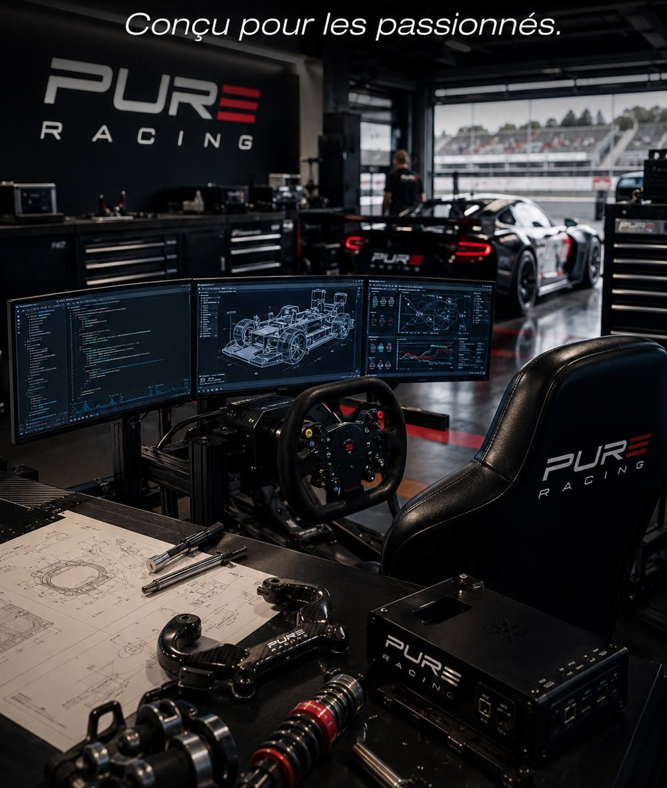

Une radio, un coach virage par virage, la télémétrie, un ingénieur pour ton setup, et tout ce qu'il faut pour faire vibrer, bouger et ressentir ta voiture. Dans un seul plugin.

Pure Racing FX est un projet né de la passion du simracing et d'une perpétuelle quête d'immersion, sans forcément dépenser plus. Le plugin Pit Box centralise tous mes projets, des plus simples aux plus aboutis.
Je ne prétends pas révolutionner le simracing ni proposer des outils meilleurs que ceux qui existent déjà. Téléchargez, testez, expérimentez et faites-moi part de vos retours ! Vos remarques et suggestions sont précieuses pour faire évoluer ces outils développés au fil du temps.
« Je passe probablement plus de temps à imaginer, développer et expérimenter qu'à rouler sur le tarmac… mais c'est aussi ça, la passion du simracing. »
Deux minutes dans Pit Box : un menu, huit modules, et le même univers d'un bout à l'autre.
Les modules suivent le déroulé d'une séance. Tu actives seulement ceux qui correspondent à ton matériel : ceux que tu coupes ne consomment rien.
Les voitures autour de toi, l'entrée des stands, tes questions à la voix et les modules pilotés sans lâcher le volant.
Découvrir →Chaque tour comparé à un tour de référence de ta catégorie. Après la ligne : « Arrêt de bus, tu perds 5 dixièmes. »
Découvrir →Tes séances MoTeC et LMU : courbes, freinages, pneus, suspensions et trajectoires, deux tours comparés point par point.
Découvrir →Ton ressenti et ta télémétrie donnent un diagnostic, puis des changements de setup chiffrés à essayer en piste.
Découvrir →Des profils moteur pour tes bass shakers, adaptés à chaque voiture et chargés automatiquement.
Découvrir →Les mouvements de ta voiture sur ton moniteur, ou sur ta plateforme, par OpenTrack. Préréglages par jeu et par châssis.
Découvrir →Écrêtage, marge et couple de la voiture, tour par tour : tu sais si ton réglage sature, et de combien.
Découvrir →Une collection de dashboards SimHub, du plus épuré au plus complet, avec drapeaux et écarts avec tes rivaux.
Découvrir →Engine, Motion, Télémétrie et Training s'ouvrent sur une tablette ou un téléphone du même Wi-Fi : tu règles en roulant.
Pose tes questions à ton ingénieur, active ou coupe un module : le Spotter comprend le français.
Bascule entre le jeu et Pit Box sans lâcher le volant. Le plus confortable : le jeu en plein écran fenêtré.
Chaque module a son bouton Prise en main : le mode d'emploi, toujours à un clic.
Pit Box est un plugin pour SimHub (Windows). Spotter, Training et Ingénieur sont pensés d'abord pour Le Mans Ultimate ; Télémétrie lit les fichiers MoTeC des autres simulations.